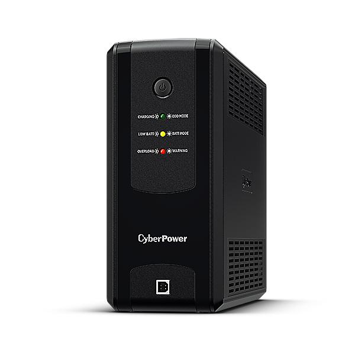

Buying and configuring a CyberPower UPS for my home server
2026-03-14Buying a UPS (finally)
After upgrading a few parts of my server and network in August 2025, I decided that it was probably about time to remedy a critical missing piece of my home setup.
We get frequent short power cuts when the weather isn't great, and while I had been lucky that my little old HP Microserver had survived so much abuse, the worry in the back of my head was that at some point a power cut was going to cause issues with my new server and/or data. Through the Autumn and Winter months I think we average around one power cut per month, normally for under 2 minutes, with one outlier for a couple of hours in early February.
I'd half-heartedly looked at buying an uninterruptible power supply (UPS) in the past, but struggled to find anything that caught my eye. I wanted to be able to keep my server running through short power cuts; only powering my server down safely if the power had been off for over 10 minutes or so.
A lot of our power cuts occur during the night and my dog sleeps within earshot of my server, so I needed to be able to configure the UPS to not make any loud beeps when the power goes off. This seemed to be an issue with the APC UPS I was initially considering.
After doing some (minimal) research I decided on the CyberPower UT1050EIG. With it's catchy name and good reviews, it offers enough power output for my server, with a big enough capacity to keep it on for more than long enough to survive our short power cuts.

It has a USB type B port to connect to my server, and pretty well documented software to install to help configure the UPS. It took me a little while to find the software and documentation from the product page, but once I did I was able to see it was available as a .deb installer for x64. The documentation on the Arch wiki was also really helpful, though in fairness it's saved me a few times over the years for documentation.
I bought the UPS from Scan for £95.98 including postage, and while delivery took a little longer than expected, I was very pleased with how well it was packaged. I bought a C14 to C13 power cable, but discovered on arrival that the UPS came with one in the box. (I couldn't see any mention of it on the product page).
I was happy to see that the software allowed configuring the audible alarm, and time/capacity thresholds for powering down a connected device. According to the product page it can put out 630W (my server has a 500W power supply, but draws much less than that even under load) and can sustain 90W for over 40 minutes. I think my server idles at around half of that, so I should theoretically get around an hour and 20 minutes of life if I were to prioritise keeping my server running as long as possible.
The pwrstat software executes user-editable shell scripts on power loss and before switching off a connected device, perfect for logging and keeping track of how often my power supplier messes up. I haven't worked out if I can log my power coming back on in cases where the server didn't reboot, but it's not hugley important. I can get that information post-restart from the pwrstat software, so for next Autumn/Winter I may write a script to run daily and keep track of any changes to that value.
Using the pwrstat software
After installing the powerpanel software, information about the UPS can be seen using the pwrstat command.
The installer can also add a systemd service called pwrstatd. Logs for the service can been seen from journald with the command sudo journalctl -u pwrstatd.
To see the current running status of the UPS:
$ sudo pwrstat -status
The UPS information shows as following:
Properties:
Model Name................... UT1050EG
Firmware Number.............. BF01701DAG1.x
Rating Voltage............... 230 V
Rating Power................. 630 Watt
Current UPS status:
State........................ Normal
Power Supply by.............. Utility Power
Utility Voltage.............. 238 V
Output Voltage............... 238 V
Battery Capacity............. 100 %
Remaining Runtime............ 219 min.
Load......................... 50 Watt(8 %)
Line Interaction............. None
Test Result.................. Unknown
Last Power Event............. Blackout at 2026/02/11 17:25:21
To see the current config of the UPS:
$ sudo pwrstat -config
Daemon Configuration:
Alarm .............................................. Off
Hibernate .......................................... Off
Cloud .............................................. Off
Action for Power Failure:
Delay time since Power failure ............. 60 sec.
Run script command ......................... On
Path of script command ..................... /etc/pwrstatd-powerfail.sh
Duration of command running ................ 0 sec.
Enable shutdown system ..................... Off
Action for Battery Low:
Remaining runtime threshold ................ 300 sec.
Battery capacity threshold ................. 35 %.
Run script command ......................... On
Path of command ............................ /etc/pwrstatd-lowbatt.sh
Duration of command running ................ 0 sec.
Enable shutdown system ..................... On
To configure the UPS, either the config file can be edited directly at /etc/pwrstatd.conf, or individual settings can be modified with the pwrstat command.
I disabled the alarm, and set the UPS to keep my server running when the power initially cuts out. The default settings mean that the power failure event only fires when the power has been off for at least 60 seconds, and the server will be kept running until either the battery drops to 35% capacity, or there are only 5 minutes left of runtime.
# disable the audible alarm
$ sudo pwrstat -alarm off
# keep the server on when the power cuts out
$ sudo pwrstat -pwrfail -shutdown off
What I could have done differently
My desktop PC lives next to my server under my desk, but doesn't benefit from the same protection as my server. This was in part because it has an 850W power supply, and buying a UPS that can manage a total of 1350W would have cost my significantly more than the ~£95 I spent.
I also don't currently have a solution for keeping my internet connection online when my power cuts. While I could buy another UPS for my router and fibre modem where they come into the house, I assume that the Openreach cabinet over the road from me doesn't have a large UPS so there may not be much I can do about it. Generally my mobile signal drops at the same time too, as the nearest telephone mast is obviously on the same part of the grid as I am.
Sending an email to myself when my power cuts out would be nice, but jsut knowing that the hard disks aren't suddenly cutting out mid-write is enough to help me sleep better at night.